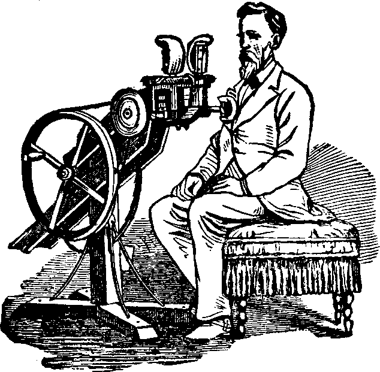
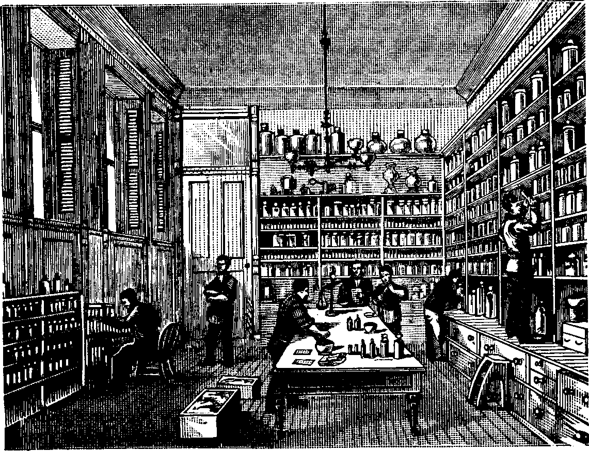
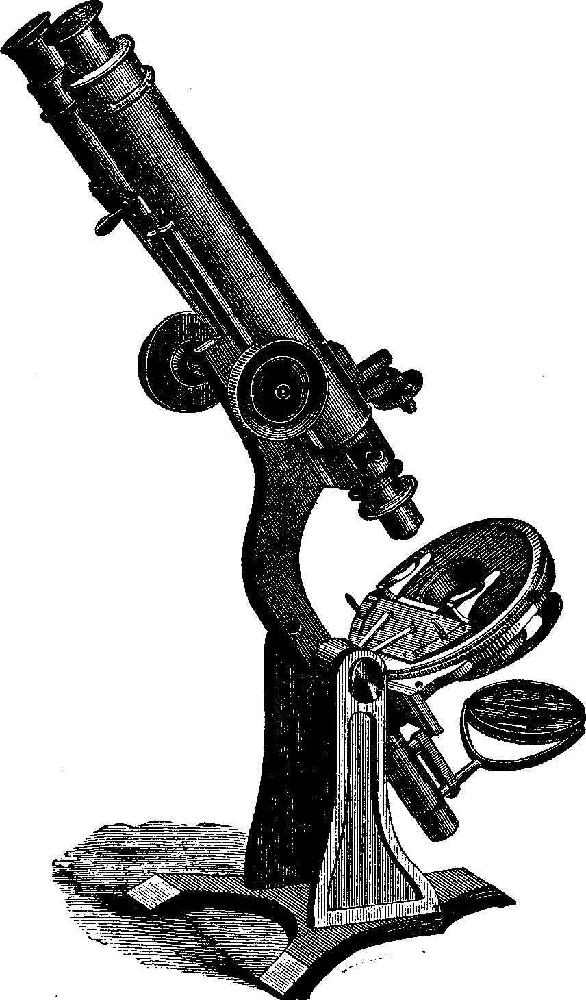
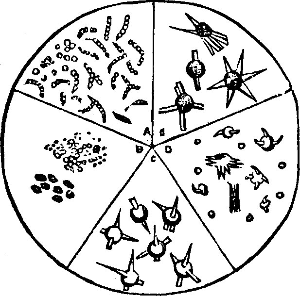
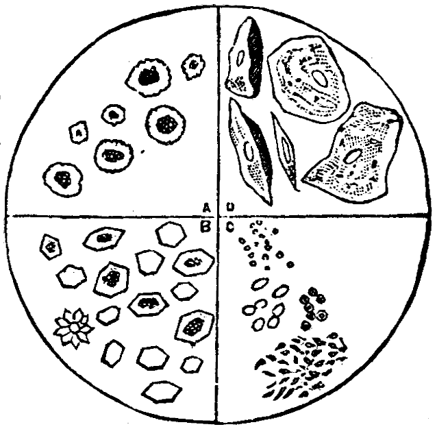

| << PREVIOUS | FIRST | NEXT >> |
| | 01 | 02 | 03 | 04 | 05 | 06 | 07 | 08 | 09 | | ||
We have, in different parts of this work, referred to a large variety of ingeniously devised machinery and apparatus employed at the Invalids' Hotel and Surgical Institute, in the treatment of chronic diseases. Although we can, on paper, give but a meagre idea of the variety and adaptability of these valuable mechanical appliances, yet we will endeavor to illustrate and explain a few of our machines for the application of transmitted motion.
Fig. 1 represents a machine, called the Manipulator, which transmits motion through suitable attachments, which are adjustable by means of the ratchet G, so as to reach all parts of the body. It is equally available for applying motion to the head, feet, or any intermediate part of the body.
[pg 907]B, B are rubbing attachments, with two opposing elastic, adherent surfaces, between which an arm or a leg may be included. These have alternate reciprocating action from the rock-shaft H, and are made to approach each other, and press the included part at the will of the patient. This is sometimes called the double-rubber, and is made detachable if desired.
A is the lever, by which the two parts of the double-rubber are made to compress the arm or leg.
D is a single attachment for rubbing. It may be connected at either side of the machine, so as to present the rubbing surface in four different directions, as may be most convenient. It will act perpendicularly, horizontally, or diagonally, and from below or from above the part receiving the action, according to requirements. The shank of the rubber may have any special form to suit special cases.
C is the foot holder. It communicates to the leg the semi-rotary or oscillating motion of the rock-shaft. It may be attached to either end of the rock-shaft.
E is the hand holder, which, grasped by the hand, communicates motion to the arm, shoulder, and chest; or the hand [pg 908]may be inserted passively, when the effect of motion is more confined to the hand and fore-arm.
In the position shown in Fig. 2, by means of the single rubber attachment, the manipulator acts upon the upper portion of the trunk, neck, head, and arms; by means of the hand-holder, upon the arms; by means of the double-rubber, upon the arms, shoulders, and scalp.
When the acting part or head is lowered to its extreme limit, the machine occupies the least space. In this position, by means of the foot-holder it communicates oscillation to the legs; by means of the single-rubber, it acts upon the feet, ankles, and lower leg; by means of the double-rubber, it acts upon the legs, including the feet, the patient either sitting or lying.
In all of these applications of motion, energy travels from inanimate to animate matter; non-vital contributes to vital energy: and the various processes through which vital power is developed are promoted and carried forward in a degree till the point which constitutes health is attained.
The name, Manipulator, is very naturally applied to the instrument, the action of which resembles so much that of the living operator. It is, however, impossible for the unaided hand to impart the degree of rapidity necessary to secure the effects easily attained by this machine; and, [pg 909]practically, restoration is often secured in cases in which it is quite unattainable by any other remedial agent.

Fig. 6. Rubbing the Chest and Abdomen.
Motion, transmitted by the manipulator, exerts a curative effect in all chronic affections, and is not limited, as is sometimes supposed, to paralytic affections and deformities. In these latter affections it is a great assistance in effecting a cure; while, in chronic affections, whatever the local symptoms, it supplies the additional energy which is indispensable for recovery in all diseases of long standing.
Mode of Operation.—Fig. 4 represents the manipulator in operation. The machine is propelled by steam power at the Invalids' Hotel and Surgical Institute, but may be worked by hand, as here represented. One arm is inserted between the double-rubbing pads, which are raised to about the height of the shoulders, the patient being seated at the side of the machine; the other hand is placed on the lever, and as much pressure is applied as is perfectly agreeable, care being taken to diminish the pressure at any part which is unusually sensitive. All portions of the arm from the shoulder down are successively included in the rubbers, while a suitable degree of reciprocating or rubbing action is obtained by giving motion to the wheel.
To apply the same operation to the other arm, the patient [pg 910]may either turn in his seat or change his position to the opposite side of the machine.
If any portion of the extremity is affected with inflammation or swelling, it is necessary to apply the action described to the whole of the unaffected portion first; after this the affected part may be beneficially operated on, provided that the sensations are strictly heeded, and that it is so managed that only a comfortable feeling is produced.
Fig. 8. Oscillating the Arms and Chest.
In Fig. 5, the patient is so seated beside the machine that he can insert one thigh between the pads of the rubber, and also control the lever with the hand. It is sometimes more convenient to suspend a movable weight from the lever. While the machine is running, he can withdraw the leg gradually, as each portion receives its proper amount of action, till the whole, including the foot, becomes glowing with the effect. The boot or shoe affords no impediment to the effect, and should remain on.
Sometimes, especially in the beginning, or when the feet are habitually cold, it is better to apply the action only from the knees down.
The rubbing-pad (d) may be attached to either side of the [pg 911]machine, according to convenience or effect sought. The action derived from the right end of the rock-shaft is much less severe than that from the left, on account of the shape of the rubber appendage, and at the beginning should be used in preference. In Fig. 6, the patient sits on an ordinary stool, or, if feeble, in a chair, and presents any portion of the chest or abdomen to the action of the rubber. The instrument is raised or lowered to suit convenience, while the patient gently presses portions of the trunk successively upon the rubbing-pad. The degree of the effect is thus always under the absolute control of the one receiving the action. This operation, like the preceding, produces great heat, reddens the skin, relieves pain, and greatly stimulates the functions, not only of the skin, but of the organs contained in the cavities of the chest and the abdomen.
Fig. 10. Vibrator operated by Manipulator.
The same operation may be applied also to the legs while the patient is standing.
In Fig. 7, the back is presented to the action of the rubbing-pad. The action will, if desired, be made to reach from the neck to the hips, and even to the thighs. All sensitive portions of the back should at first be omitted, in order that they may be benefited by the counter-irritation or drawing away of the blood. This is easily produced by those familiar with the use of the machine. The rubbing of the back should be deferred till the close of each application, in order that the spinal centers may be relieved of hyperæmia, or excess of blood.
[pg 912]The machine, as represented by Fig. 8, is brought to the desired elevation, about as high as the shoulders, and the hand-holder is attached. One arm is extended horizontally, and the hand grasps the hand-holder, while rapid motion is given by turning the wheel. An alternate twisting motion is communicated to the arm, which causes corresponding pressure and relaxation of all the soft tissues of the limb, combined with slight rubbing or attrition. The action is increased by contracting the muscles, and also by grasping at greater distance from the center. Both hands may grasp at the same time, or the two sides may receive the motion in turn. The effect is similar to that of the rubbing before described, but it is less limited; by grasping firmly, it may extend to the whole chest.
The foot-holder is attached, as shown in Fig. 9, and brought by the means before described to a position to receive one foot at a comfortable elevation, the leg being extended, while the patient is seated in an ordinary chair in an easy position. The action is precisely like that above described as applied to the arm, and extends to the thigh and pelvis. If the knee is slightly flexed, the action is almost entirely confined to the lower leg. Each leg may be operated on in turn.
Mode of Applying Mechanical Movements to Very Feeble Invalids.—Experience demonstrates that no degree of feebleness excludes the beneficial use of these operations. Invalids [pg 913]too weak to stand, or able to help themselves in the least degree are often treated with perfect success. A judicious use of the Manipulator always increases nutrition and strength without any fatigue or exhaustion, however feeble the patient may be. It is only necessary to provide for these cases additional conveniences, so that the applications can be made in the recumbent position, and also that proper intervals of rest be allowed between successive operations. For this purpose couches are provided, each containing a certain portion of the Manipulator. These are operated by means of a short connecting-rod, joining the rock-shafts of the two pieces of mechanism, as shown in Fig. 10. The Vibrator has two small discs, or heads acting through an opening in the couch on which the invalid rests. These impinge with a rapid, direct stroke upon the portion of the body exposed to the action. The top of the couch is adjustable, and is quickly placed at the elevation which secures the proper force of the instrument, as shown in Fig 11. By simply turning and moving the body, the patient brings any part in contact with the vibrating discs. The cut represents the Vibrator, in which the force impinges at right angles with the surface of the body, sending waves of motion through its substance.
Fig. 12. Apparatus for the Rubbing
in a Recumbent Position.
The rubbing which is shown in Figs. 4 and 5 may be applied to all parts of the body in a recumbent position. A couch is required of similar construction to the vibrating couch, but with a rubbing-pad instead of vibrating heads acting through the [pg 914]opening and operated by appropriate connections, as shown in Fig. 12. The top is adjustable, and the degree of effect desired is capable of easy regulation. The patient turns different portions of the body to the action of the rubber as required.
Kneading. Kneading is a process applied chiefly to the abdomen. The purpose of this operation is to increase nutrition, the muscular power and action of the abdominal walls, and the function of the organs which they contain. Three modes of applying this operation by the mechanical apparatus are in use, effected by the Direct, the Rotary, and the Revolving Kneader.
Fig. 13. Apparatus for Rotary Kneading.
The Direct Kneader. This resembles in form and action the vibrating instrument shown in Fig. 11. The impinging heads, however, are made broader, the motion greater in extent, and the rate of motion less than one-tenth of that employed for the purpose of vibrating. This slowness of motion seems to increase the action of the muscles.
The Rotary Kneader. The action of the kneading heads in this form of apparatus, as shown in Fig. 13, is inward and upward alternately, and it is eminently well calculated to stimulate the action of the abdominal organs.
The Revolving Kneader. In the form of kneading apparatus, shown in Fig. 14, two thick rollers, which move freely on axes at the extremities of arms, projecting on either [pg 915]side of a shaft turned by a crank or belt, are made to act alternately upon each side of the abdomen.
In the methods of kneading above described, the degree of force acting on the body is governed by an arrangement for elevating or depressing the upholstered top of the couch upon which the patient rests, and through which the action is transmitted to the body.
If this form of apparatus is driven at a rate ten times more rapidly than is desired for kneading, the effect is vibratory, and it is, in fact, used for that purpose.
Fig. 14. Apparatus for Kneading with Rollers.
The application of motion through the Manipulator promotes absorption, and thus all kinds of swellings and non-malignant tumors are made to diminish under its use. In these cases the vessels of the affected part are distended with stagnant blood, and a portion of the fluid passes through their walls, distending the surrounding tissues, which become more or less hardened. By the transmission of active motion to the affected parts, the contents of the vessels are urged forward; the outside fluids are thus permitted to return to the general circulation and become subject to the energetic vital action of the general system, local deficiencies of oxidation being increased to the normal degree, causing destruction of morbid matter and giving place for new [pg 916]and wholesome nutritive materials for vital use. In short, normal functional activity is established, both locally and generally. Scrofulous, dropsical, rheumatic, and other local accumulations disappear, and even tumors are dispersed, by the use of the Manipulator, in cases in which the knife would otherwise be required.
Artificial means have always been employed to produce an energetic flow of blood in different parts of the body, thereby relieving morbid distention of the vessels, and consequent irritation and pain in neighboring parts. Cupping, hot applications, mustard, capsicum, blisters, and other irritants, are resorted to, but their effects, while generally very good in acute cases, are too transient to be of material aid in chronic affections. By the use of the Manipulator, we can produce the most thorough revulsive effects, operating upon large surfaces, and causing large masses of muscle to receive an increased amount of blood, thus drawing it away from parts oppressed by too great a supply, constituting engorgement. No injury is done to the parts acted upon; on the contrary, they are strengthened by the application, which can be repeated as often as necessary till relief is permanent. Thus, the head, heart, digestive organs, liver, chest, or whatever part is oppressed by excess of blood, may be speedily and permanently relieved. By means of this ability to relieve any part of the system from engorgement, and consequent inflammation and its results, are we enabled to permanently cure a large variety of chronic inflammatory, ulcerative, and nervous affections.
Local inflammations by this method of treatment may be speedily cured.
By the transmission of motion through the Manipulator and other ingeniously devised apparatus and machinery, we increase the functional power and activity of the muscles, and thereby diminish morbid sensibility of the nerves, which is present in neuralgia. Prolonged and excessive nervous action is attended with too great a rush of blood to the nerve-centers, which can [pg 917]only be relieved by increasing the flow in the muscles. Congestion, or hyperæmia, in the spinal cord or brain, or both, is a condition ever present in neuralgia. The application of motion through the manipulator causes the blood to flow to the muscles, thus relieving nervous congestion and consequent neuralgia.
In no single disease has the transmission of motion through the Manipulator proved more thoroughly efficacious than in paralysis. The most prominent requirements in these cases seem to be the following:
Excess of blood in the brain and spinal cord needs to be removed and diverted to parts in which it will be useful instead of obstructive.
The contractile power of the capillaries should be improved.
The quality of nutritive fluids should be improved by the promotion of oxidation through increased circulation.
These and many more wants of disordered nerves, are readily supplied by transmitted motion.
The Manipulator combines, in a single ingenious mechanical contrivance, the several movements best adapted for the promotion of healthy functional activity.
"Deformities arising from paralysis and contractions of muscles and tendons, producing stiffened joints and distorted limbs, are of common occurrence. A rational explanation of the wonderful curative results which follow the employment of transmitted motion in these cases may not be without interest to the reader. The muscles are composed of bundles of little fibers which glide upon one another in every movement. Another set of fibers called connective tissue, holds the fibers together in bundles or separate muscles, and interlaces and crosses them in every direction. Now, if these fibers remain long in a fixed position, or are involved in inflammation, there is danger of adhesions forming between them, producing permanent immobility; gliding movements are interfered with, and the muscle ceases to perform its function. Inflammation [pg 918]gives rise to effusion, or the formation of a kind of cement which binds together the muscular fibers and prevents motion.
Rubbing, kneading, and actively manipulating the affected parts with that intensity of administration secured by the manipulator, rends asunder and breaks up these minute adhesions, re-establishing gliding motions, causes absorption of effused materials, and restores the affected part to a normal condition.
Fig. 15. Muscular fibre highly magnified.
The deformed limb is straightened by the filling out of the muscle-cells, and increasing the length and also the nutrition of the affected muscles. No pulling or forced extension is required. Deformity ceases when the conditions upon which it depends are removed by rational appliances, which are always agreeable. No brace, splints, or other confining appliances are necessary, except in rare cases in which the bones are very badly distorted.
In withered and deformed limbs, resulting from infantile paralysis, the manipulator furnishes the most agreeable, direct, and certain remedy. It restores nutrition, sensation, and power, and dispenses almost wholly with mechanical supports. Club-feet, wry neck, spinal curvature, hip-joint disease, white swellings, and stiffened joints, are all readily amendable to the curative effects of motion administered by the manipulator and other machinery.
Contracted and shortened muscles are gradually lengthened by vigorous, long-continued, and frequently repeated rubbing with the manipulator across their longitudinal fibers; bound-down and confined tendons are liberated and normal movements established.
Uterine and ovarian congestion, chronic inflammation, discharges, morbid enlargement, prolapsus, anteversion and retroversion, anteflexion and retroflexion, and other derangements of the womb and its appendages, are radically cured by the vibratory, rubbing, kneading, and other movements, administered [pg 919]through the manipulator and other mechanical appliances employed at the Invalids' Hotel and Surgical Institute.
To those who are tired of taking medicine, this mode of treatment commends itself as being both agreeable and efficient. There is no case too weak, nervous, or helpless for the use of this curative agent. It is entirely devoid of objectionable features, being always applied outside the clothing.
Cause of Female Weakness. The true relations of cause and effect are very liable to be misunderstood, when considering the various diseases incident to the organs contained in the female pelvis. Treatment intended to be remedial is therefore very often misdirected and fails to afford relief, positive injury frequently resulting instead. When the nature of these diseases is properly understood, their cure can be effected with comparative ease.
These diseases are always attended with weakness, which is often very great, of the muscles that hold the diseased organs in position. The muscles forming the walls of the abdomen, and the diaphragm, or midriff, all of which are concerned in the act of respiration, become feeble and only partially perform their functions. In health, they act constantly, even during sleep, producing a rhythmical movement, which is communicated to the contents of the abdominal and pelvic cavities. This motion promotes a healthy circulation in the parts. In almost all affections of the pelvic organs, this normal condition is greatly diminished.
Diminution of the motions of respiration is attended with an increase of the amount of the blood in the pelvic organs, constituting an engorgement of the parts, called congestion, or inflammation. This gives rise to enlargement of the womb, ulcerations, tumors, and a multitude of kindred secondary effects, usually considered as the primary disease and treated as such. The contents of the cavity of the trunk, weighing several pounds, are allowed to gravitate down and rest upon the contents of the pelvis, forcing the congested uterus and ovaries down out of their natural positions, and often bending or tipping the womb in various directions. A long list of symptoms follows as the natural consequence of these abnormal conditions.
Rational Treatment. Ovarian congestion and inflammation, [pg 920]inflammation of the uterus, ulceration of this organ, deranged menstruation, leucorrhea with the attendant pain, nervousness, and other derangements depending upon loss of supporting power in the abdominal muscles, all result from loss of the natural motions of respiration, and consequent deranged circulation. These several conditions can be cured by removing their cause. When the power of the parts involved in the weakness is restored, all these morbid conditions disappear. Judicious cultivation of power in the weakened supports is attended with certain curative results. This is best accomplished by mechanical motion, by which the normal circulation is restored, inflammations and congestions are subdued, displacements corrected, ulcers healed, and functional activity is re-established.
Motion properly transmitted to the human system by mechanical apparatus is transformed into other forms of force identical with vital energy, by which the ordinary processes of the system are greatly promoted.
It increases animal heat and nervous and muscular power to the normal standard.
It removes engorgement or local impediments to the circulation.
The electrical induction produced renders it a most efficacious remedy for paralysis of all kinds.
It removes interstitial fluids and causes rapid absorption and disappearance of solid and fluid accumulations.
It is a powerful alterative, or blood-purifier, increasing oxidation and stimulating excretion.
It diminishes chronic nervous irritability and promotes sleep.
Deformities are easily cured without the cutting of tendons, or use of mechanical supports.
It hardens the flesh by increasing muscular development and improves digestion and nutrition.
[pg 921]Dr. R.V. PIERCE, having acquired a world-wide reputation in the treatment of Chronic Diseases, resulting in a professional business far exceeding his individual ability to conduct, some years ago induced several medical gentlemen of high professional standing to associate themselves with him, as the Faculty of the World's Dispensary and Surgical Institute, the Consulting Department of which has since been merged into the Invalids' Hotel. The organization is duly incorporated under a statute enacted by the Legislature of the State of New York, and under the name and style of the "WORLD'S DISPENSARY MEDICAL ASSOCIATION," of which Dr. PIERCE is President, and in the affairs of which he will, as heretofore, take an active and constant part.
Dr. R.V.PIERCE, having in the Fall of 1880 resigned his seat in Congress, has since been able to devote his whole time and attention to the interests of the Association, and those consulting our Medical and Surgical Faculty have the full benefits of his council and professional services. That he should prefer to give up a high and honorable position in the councils of the nation, to serve the sick, is conclusive evidence of his devotion to their interests and of love for his profession.
[pg 922]
Invalids' Hotel and Surgical
Institute, 663 Main Street, Buffalo, N.Y.
This imposing Establishment was designed and erected to accommodate the large number of invalids who visit Buffalo from every State and Territory, as well as from many foreign lands, that they may avail themselves of the professional services of the Staff of Skilled Specialists in Medicine and Surgery that compose the Faculty of this widely-celebrated institution.
On the sixteenth of February 1881, the original Invalids' Hotel was totally destroyed by fire. Although occupied at the time by a large number of invalids, yet, through the extraordinary exertions of the Faculty and employees, all were safely removed from the building without injury to any one. The Board of Trustees took prompt steps to rebuild, for the accommodation of the many sufferers who apply, to avail themselves of the skill, facilities and advantages of treatment which such a perfectly equipped establishment affords. Profiting by the experience afforded by several years' occupancy of the original Invalids' Hotel building, which at the date of its erection was the largest and most complete establishment of its kind in the world, we believe we have, in the building of the elegant structure illustrated herein, made great improvements over the original Invalids' Hotel, for the accommodation of our patients. Although our new building has only been occupied about two years, yet almost immediately our business required the erection of a very large addition thereto, to accommodate our growing practice. This large Annex, which is about the size of the original [pg 924]building, has ever since been kept well filled with patients, hailing from every State and Territory of the United States, Canada and occasionally from a foreign country,
THE INVALIDS' HOTEL AND SURGICAL INSTITUTE IS PLEASANTLY SITUATED AT No. 663 MAIN STREET,
in the city of Buffalo, just above and outside the business and bustle of this Queen City of the Lakes. It is easily reached from the railroad depots by the Exchange and Main Street car lines (see map on last page of this book). It is a substantially built brick building, trimmed with sandstone, well lighted and provided with a patent hydraulic elevator, so that its upper stories are quite as desirable as any, being more [pg 925]quiet than those lower down. It is well provided with fire escapes, and, in fact, nothing has been neglected that can add to the comfort and home-like make-up of this popular national resort for the invalid and afflicted. Great pains and expense have been assumed in providing perfect ventilation for every room and part of the building.
Ante-room.—Invalids' Hotel and
Surgical Institute.
The surroundings of the Hotel are very pleasant, it being located in the finest built part of the city, among the most elegant residences.
Only men who are, by thorough education and experience, especially fitted to fill their respective positions, have been chosen to serve as physicians and surgeons in this institution. After having spent a very large sum of money in erecting and furnishing this national resort for invalids with every requirement and facility for the successful treatment of all classes of chronic diseases, it is the determination of the Board of Directors that the Faculty of Physicians and Surgeons shall be superior in culture, experience and skill.
We have not the space to speak, individually, of the eighteen professional gentlemen composing the Faculty, but will say that among them are those whose long connection with the World's Dispensary and Surgical Institute has given them great experience and rendered them experts in their specialties. Several of them had previously distinguished themselves in both private and hospital practice, had held important chairs as lecturers and teachers in Medical Colleges, and had filled [pg 926]responsible positions in military and civil hospitals; also in some of the most noted Asylums, Dispensaries, and Sanitary Institutions in the land.
With such a staff of Physicians and Surgeons, efficient and trained nurses, and with all the most approved sanitary, medical and surgical appliances which study, experience, invention and the most liberal expenditure of money, can produce and bring together in one institution, the Invalids' Hotel and Surgical Institute affords the afflicted unusual opportunities for relief.
The entrance to the Invalids' Hotel and Surgical Institute is covered by a lofty porch of beautiful design, the roof of which is supported upon heavy iron columns. Above the massive double doors, through which the visitor enters, are large, heavy panels of beautifully wrought stained glass, on which the words "Invalids' Hotel and Surgical Institute" stand out conspicuously.
Gentlemen's Reception-room,
Invalids' Hotel and Surgical Institute.
The first floor of the building is reached through a beautifully finished vestibule, by a short flight of broad, easy stairs, and once inside the visitor is struck by the beauty of design as well as by the home-like [pg 927]appearance of the surroundings. The wood-work is mainly of hard woods, oak and cherry predominating. In a large part of the house the floors are of oak, with a cherry border, neatly finished in oil and shellac, and covered with rich rugs and elegant carpets of the very best quality.
Ladies' Parlor.—Invalids' Hotel and
Surgical Institute.
On the first floor is the gentlemen's reception-room, which is thronged with patients from early in the morning until late in the afternoon. It is entirely distinct from the large reception-room and parlors for lady patients, and the utmost privacy is secured throughout the whole arrangement of the Institution. On this floor are the suites of offices, parlors, and private consultation-rooms, some fifteen in all; also a well furnished reading-room and circulating library, for the use of the inmates of the Institution. On all sides are beautifully frescoed walls adorned with numerous choice engravings and other pictures. All the rooms throughout the house are furnished in the best of style, and in a manner to afford the utmost comfort and cheerfulness of surroundings [pg 928]for the sick and afflicted who seek this remedial resort. The Turkish and other baths are elegantly fitted up on the first floor, opposite the reading-room.
Above the first, or main floor, the building is divided into separate rooms and suites of rooms for the accommodation of patients. All are well lighted, have high ceilings, and are cheerful and well ventilated apartments. On the second floor is the large medical library and medical council-room, for the exclusive use of the Faculty, also the museum-room, which contains a large and valuable collection of anatomical and morbid specimens, many of them being obtained from cases treated in this Institution. On this floor are also suites of rooms, occupied by the Bureau of Medical Correspondence, wherein from ten to twelve physicians, each supplied with the improved graphophone, are constantly employed in attending to the vast correspondence received from invalids residing in all parts of the United States and Canada. Every important case receives the careful consideration of a council composed of from three to five of these expert specialists, before being finally passed upon and prescribed for.
Library and Reading-room—Invalids'
Hotel and Surgical Institute.
are the large treatment-rooms, supplied with all the apparatus and appliances for the successful management of every chronic malady incident to humanity. Electrical apparatus of the latest and most approved kinds, some of it driven and operated by steam-power, dry cupping and equalizing-treatment apparatus, "vitalization" apparatus, numerous and most ingenious rubbing and manipulating apparatus and machinery, driven by steam-power, are among the almost innumerable curative agencies that are here brought into use as aids in the cure of human ailments. Our
President Pierce's Business Office—Invalids' Hotel and Surgical
Institute.
is the finest to be found in any sanitarium in the United States and, we believe, in the world. There are two forty-cell galvanic batteries with switch boards for controlling the voltage, or force, from the whole power to one-fortieth of this amount, at the will of the physician. Safe-guards in the shape of milli-ampere meters continually indicate to the operator the force of the current. There is a dynamo for charging the storage batteries, which may be used in a patient's room when this method is found more convenient or more comfortable for the invalid. There are [pg 930]two static or Franklin machines. These are used when the milder current is desired, and for spraying, sparking, etc. One of the instruments is of high voltage and furnishes us with the X rays for examining the interior parts of the body. The largest treatment room also contains a powerful ozone generator, operated by a dynamo. This supplies the room with allotropic oxygen and is invaluable in treating diseases of the lungs and air passages. This supplies the patient with vitalized air, equal to the most salubrious atmosphere in any part of the globe.
Beyond this and separated by a court, across which is an iron bridge, are the large dispensing-rooms, stocked with drugs and medical compounds of almost endless variety, and representing every branch of the materia medica. Here all medicines prescribed are most carefully and specially prepared for each individual case. Those to be sent away by mail or express, to patients being treated at a distance, are placed in trays, with full directions for use, and sent to another large room, where they are carefully packed, and shipped thence to their destination.
On the fourth floor are located the surgical operating-rooms and surgical ward. There are also a large number of nice, large, well furnished separate rooms on this floor, used principally for the accommodation of surgical cases. Strong, broad, iron staircases connect all the upper floors with the ground, so that in case of fire, patients need have no fear of being unable to get out safely. In fact, the building has been constructed so as to render the rapid spread of fire through it impossible, all the floors being laid on cement.
is provided, so that the upper floors are quite as desirable as those lower down. The dining-rooms for gentlemen, as well as those for ladies, are located in the basement, which is reached either by stairways or by the elevator. The kitchen, store-rooms, chill-rooms, pantries, and all culinary arrangements are also in the basement.
Six large fire-proof vaults are provided in this building in which to preserve, secure from observation, as well as from fire, all records of cases examined and treated by the Faculty.
Throughout all this vast building the visitor is struck with the wonderful order and system with which every detail is carried out.
A glimpse at the Turkish Bath Department.
The Invalids' Hotel and Surgical Institute, as hereinbefore indicated, is provided with Turkish, and other approved baths, with a [pg 931]treatment-room, fitted up with vacuum and movement-treatment apparatus of the most modern and approved style. These and much more ingeniously devised apparatus and appliances are brought into use in a great variety of chronic affections with marvelously successful results. A perfect system of physical training, especially adapted to the wants of the invalid and weak, and most skillfully conducted and applied, is not the least important among the many advantages that the chronic sufferers here find.
In the Surgical Department, every instrument and appliance approved by the modern operator is provided, and many and ingenious are the instruments and devices that the Faculty of this institution have invented and perfected to meet the wants of their numerous cases.
In the prescribing of remedies for disease, the Staff resort to the whole broad field of materia medica, allowing themselves to be hampered by no school, ism, pathy, or sect. The medicines employed are all prepared by skilled chemists and pharmacists, and the greatest care is exercised to have them manufactured from the freshest and purest ingredients. Our Faculty probably employ a greater number and variety of extracts from native roots, barks and herbs in their practice than are used in any other invalids' resort in the land. All of the vegetable extracts employed in our practice are prepared in our own Laboratory.
The table is supplied with an abundance of wholesome and nutritious food, especially adapted and prepared to suit the invalid, it being varied to suit each particular case. The Faculty recognize the importance of proper food as one of the greatest factors in the treatment of chronic diseases. While properly regulating and restricting the food of the [pg 932]invalid when necessary, they also recognize the fact that many are benefited by a liberal diet of the most substantial food, as steaks, eggs, oysters, milk, and other very nutritious articles of diet, which are always provided in abundance for those for whom they are suited.
View of Lake and Boat-house.—Buffalo Park.
From previous experience somewhere, some people get the impression that they are to be half starved at such an institution as this. If this is the case anywhere it is not so here, as any one who has ever resided at our sanitarium will attest.
A sufficient number of trained and experienced nurses are employed, that those requiring attendance may have the very best of care.
The institution is conducted in an orderly manner, that the utmost quiet may be secured. The Faculty insist, upon the part of the invalid, while under treatment, on the observance of habits of regularity in eating, sleeping, bathing and exercise. Only by such observance of hygienic laws can they succeed in their course of remedial training, and make the treatment curative.
While insisting upon strict observance of rules established for the good of the patient, they do not make their requirements so rigid as to interfere with the comfort and enjoyment of their patients, but, on the contrary, endeavor, in every manner possible, to provide innocent and entertaining amusements for all, recognizing the great importance of [pg 933]pleasant occupation of the mind, as an essential part of the treatment. Hence the introduction of music, amusing games, light reading, and kindred agencies for pleasant entertainment, is not neglected.
One of the Private
Consultation-rooms, Ladies' Department.
The founder of this institution commenced, many years ago, with little capital, to build up a business in the treatment of chronic diseases and devoted himself diligently to that end. His reputation for skill in his chosen field of practice gradually extended until, to-day, his fame and that of the World's Dispensary and Invalids' Hotel and Surgical Institute, are simply world-wide. As the business increased those eminent for skill have been induced to join the Faculty, until eighteen professional gentlemen, each devoting his [pg 934]attention to a special branch of practice, constitute the Medical and Surgical Staff.
Soldiers' Monument.—Lafayette Park, Buffalo.
One reason why we excel in the treatment of chronic diseases is the fact that we are supplied with all the modern improvements in the way of instruments, appliances and remedial agents used in the healing art, the expense of which deters the local physician in general practice from procuring, for the treatment of the limited number of cases that come within the circuit of his practice. The treatment of such cases requires special attention and special study to be successful.
It is a well-known fact, that appeals to the judgment of every thinking person, that a physician who devotes his whole time to the study and investigation of a certain class of diseases, must become better qualified to treat them than he who attempts to treat every ill to which flesh is heir, without giving special attention to any particular class of diseases. Men, in all ages of the world, who have made their marks, or who have become famous, have devoted their lives to some special branch of science, art or literature.
We wage no war against any physician, no matter what school of medicine he may represent; but, on the other hand, we invite the [pg 935]co-operation of all regular physicians. We are always ready and willing to impart to them any information or render any assistance that will be of mutual benefit to them and their patients.
do not travel to solicit practice, having all the business that they can attend to at our institution, nor do we employ any agents to travel and peddle or otherwise sell our medicines. If any one engaged in such business, represents himself as in any way connected with our institutions, he is a swindler and should be apprehended and prosecuted as such. And any one who will give us such information as will lead to the arrest and conviction of any person so misrepresenting will be liberally rewarded.
Undergoing Examination of the Lungs at the Invalids' Hotel and Surgical
Institute.
While not permitting any member of our professional staff to travel and solicit practice, yet we are always willing to accommodate and send a specialist to visit important or critical cases in consultation, or otherwise, or to perform important surgical operations as explained on page 971 of this book.
Let none deceive you by representing that they have heretofore [pg 936]been connected with our institution and have thereby learned our original and improved methods of treatment. We have a large and competent Staff of Specialists and while we have sometimes found it necessary to make changes, yet we always manage to retain the most expert and skillful, as we cannot afford to part with the services of those who excel.
Chemists'
Department.—Invalids' Hotel and Surgical Institute.
By adopting similar names to those which have long designated our world-famed institutions, some have endeavored to deceive and mislead invalids who were seeking relief. Others have named so-called "Electric" Trusses, "Liver Pads," and other contrivances after our President, thereby expecting to reap benefits from Dr. Pierce's well-known professional standing. Neither the Doctor nor this Association have any interest in any such articles.
NO BRANCHES.—Remember we have no branches except the one at No. 3 New Oxford Street, London, England.
Those desiring to consult us by letter, should address all communications plainly to
World's Dispensary Medical Association,[pg 937]
No. 663 MAIN STREET,
BUFFALO, N.Y.
The immense building erected and occupied by the World's Dispensary Medical Association as a Laboratory, wherein are manufactured our Dr. Pierce's Standard Family Medicines, as well as all the various Tinctures, Fluid Extracts and other pharmaceutical preparations used by the Staff of Physicians and Surgeons of the Invalids' Hotel and Surgical Institute in their practice, is not inappropriately called the World's Dispensary, for within its walls is prepared a series of remedies of such exceeding merit that they have acquired world-wide fame, and are sold in vast quantities in nearly every civilized country.
World's
Dispensary.—New Laboratory Building.
The structure, located at 660 to 670 Washington Street, immediately in the rear of the Invalids' Hotel and Surgical Institute, is of brick, with sandstone trimmings, six stories high, and 100 feet square. Its most striking architectural features exteriorly are massiveness, combined with grace and beauty of outline, and great strength.
The basement or first story opens on a level with the Washington Street sidewalk, and is occupied by a plant of two large boilers, which supply the steam to run a huge American engine, of 100 horse-power, [pg 938]built by the American Engine Co., Bound Brook, N.J. It drives all the machinery of the establishment, including drug mills, pill machines, packing machinery, a large number of printing presses, folding machines, stitching, trimming, and many other machines, located on the different floors, and used in the manufacture of medicines, books, pamphlets, circulars, posters, and other printed matter. On this floor is located steam bottle-washing machinery, and also the shipping department. Here may be seen huge piles of medicine, boxed, marked, and ready for shipment to all parts of the civilized world. A large steam freight elevator leads from this to the floors above.
Postal, Advertising, Wrapping and
Mailing Departments.
In addition to the power engine just mentioned is a 25 horse-power upright engine for running the dynamo for electric lighting, with a capacity of three hundred (300) lights. This engine and dynamo were also manufactured for us by the American Engine Company of Bound Brook, N.J. There is a small dynamo with a capacity of one hundred (100) lights used during the day to light safes, vaults, dark closets and hallways. All the offices and rooms of patients are supplied with electric light, as well as illuminating gas. An automatic Worthington [pg 939]pump is also located in the basement. This supplies the elevator and sprinkling system. The sprinklers come into play only in case of fire, when they are self-acting. This pump at its best is capable of forcing nearly two hundred gallons of water a minute. There is no place in which pure water is more desirable than in the manufacture of medicines. Our New York filter could, if such a large quantity were ever required, furnish the Dispensary with one hundred (100) barrels of pure water a day. Just beyond the south wall and buried several feet under ground is a boiler-shaped tank capable of storing ten thousand (10,000) gallons of medicine.
The main or second floor of the Dispensary is entered from Main Street, through a hall leading from the Invalids' Hotel and Surgical Institute. On this floor are located business offices, counting-room, the advertising department and mailing rooms. Large, fire-proof vaults are provided for the safe keeping of books, papers, and valuables, whilst the counting-room and offices are elegantly finished in hard woods, and present a beautiful and grand appearance.
On this floor are the Association's extensive printing and binding works. Fourteen large presses, driven by power, with numerous folding machines, trimming, cutting, and stitching machinery, are constantly running in this department. Here is printed and bound Dr. Pierce's popular work of over a thousand pages, denominated "The People's Common Sense Medical Adviser," over 1,200,000 copies of which have been sold. Millions of pocket memorandum books, pamphlets, circulars and cards are also issued from this department and scattered broadcast to every quarter of the globe.
Large mills for crushing, grinding and pulverizing roots, barks, herbs, and other drugs occupy a considerable part of this floor. Extensive drying-rooms, in which articles to be ground in the drug mills are properly dried, are also located upon this floor, as are also thousands of reams of paper ready for printing the different books, pamphlets, labels, etc. In large rooms set aside for that purpose, are stored vast quantities of labels and wrappers, for use in putting up medicines.
On this floor is located ingeniously devised filling and bottling machinery, also rooms for labeling, wrapping, and packing medicines; others are occupied for the storage of crude drugs, glass, corks, and supplies for use in the general business.
This entire floor is occupied with mixing, percolating, distilling, [pg 940]filtering, and other processes employed in the manufacturing of medicines. Every process is conducted under the watchful care of an experienced chemist and pharmacist, and in the most perfect and orderly manner; the apparatus employed being of the most approved character. Here are manufactured all the various medicinal preparations and compounds prescribed by the Faculty, in the treatment of special cases.
Section of Chemical Laboratory.—World's Dispensary.
In all departments of this vast business establishment, the visitor is struck with the perfect system which everywhere prevails, and the wonderful accuracy with which every process and transaction is carried on and consummated; hence the uniformity of purity and strength for which the medicines here manufactured have so long been celebrated. To this, also, is due much of the marvelous success attained in the department established for the special treatment of chronic and obstinate cases of disease. In this department the Faculty are not at all limited or hampered in prescribing, and do not confine themselves in the least to the proprietary or standard medicines manufactured for general sale through druggists, but employ a series of curative agents unsurpassed in variety and range of application. They aim to carefully adapt their prescriptions to each individual case.
[pg 941]
One of the Private
Consultation-rooms, Gentlemen's Department.
The destinies of institutions, like those of men, are often determined by pre-existing causes. The destinies of some men are like those of way-side plants, springing up without other apparent cause than the caprice of nature, developing without any apparent aim, yielding no perfected fruit, and finally, dying, leaving scarcely a trace of their existence. Thus it is with institutions which have their origin only in man's caprice. To be enduring, they must be founded upon the needs and necessities of humanity. Many of the great men of the world owe their greatness more to surrounding circumstances than to the genius [pg 942]within them. The highest genius can be dwarfed or deformed by the force of adverse circumstances; hence the poetic truth of Gray in those exquisite lines:
"Some mute inglorious Milton here may lie,
Some Cromwell guiltless of his country's blood."
Opportunity is the guiding star of genius. Without it, genius would drift hither and thither upon the restless, ever-changing waves of circumstance, never casting anchor in a secure haven. Upon opportunity, too, depends the success of institutions. By opportunity we mean a real and acknowledged public want. Whoever undertakes to supply this want finds himself upon the crest-wave of prosperity. It was to supply such a want that this institution was erected.
Of the seventy millions of people living in the United States to-day, it is estimated that nearly twelve millions are sufferers from chronic disease. Think for a moment! Twelve millions of people slowly but surely dying by the insidious and fatal development of chronic diseases! This is an appalling fact. And yet this is the very class of diseases with which the general practitioner is least familiar.
As a general practitioner of the healing art, fresh from curriculum, the founder of this institution early realized that the grand unpardonable sin of the medical profession was the neglect to more thoroughly study and investigate this class of diseases.
The profession is diligently cauterizing and poulticing the sores which now and then appear on the surface, but the internal chronic disease, of which these are merely the external signs, is too often overlooked or neglected.
Some years ago we devised and put into practical operation a method of
without requiring them to undergo personal examinations. We reasoned that the physician has abundant opportunity to accurately determine the nature of most chronic diseases without ever seeing the patient. In substantiating that proposition, we cited the perfect accuracy with which scientists are enabled to deduce the most minute particulars in their several departments, which appears almost miraculous, if we view the subject in the light of the early ages. Take, for example, the electro-magnetic telegraph, the greatest invention of the age. Is it not a marvelous degree of accuracy which enables an operator to exactly locate a fracture in a sub-marine cable nearly three thousand miles long? Our venerable "clerk of the weather" has become so thoroughly familiar with the most wayward elements of nature that he can accurately predict their movements. He can sit in Washington and foretell what the weather will be in Florida or New York, as well as if hundreds of miles did not intervene between him [pg 943]and the places named. And so in all departments of modern science, what is required is the knowledge of certain signs. From these, scientists deduce accurate conclusions regardless of distance. A few fossils sent to the expert geologist enables him to accurately determine the rock-formation from which they were taken. He can describe it to you as perfectly as if a cleft of it were lying on his table. So also the chemist can determine the constitution of the sun as accurately as if that luminary were not ninety-five million miles from his laboratory. The sun sends certain signs over the "infinitude of space," which the chemist classifies by passing them through the spectroscope. Only the presence of certain substances could produce these solar signs.
Medical Library and Council-room.—Invalids' Hotel and Surgical
Institute.
So, also, in medical science,
or symptoms, and, by reason of this fact, we have been enabled to originate and perfect a system of determining with the greatest accuracy the nature of chronic diseases without seeing and personally examining our patients. In recognizing diseases without a personal examination of the patient, we claim to possess no miraculous powers. We obtain our knowledge of the patient's disease by the practical application of well-established principles of modern science to the practice of medicine. [pg 944]And it is to the accuracy with which this system has endowed us that we owe our almost world-wide reputation for the skillful treatment of all lingering, or chronic, affections. This system of practice, with the marvelous success which has been attained through it, demonstrates the fact that diseases display certain phenomena, which, being subjected to scientific analysis, furnish abundant and unmistakable data to guide the judgment of the skillful practitioner aright in determining the nature of diseased conditions.
So successful has been this method of treating patients at a distance that there is scarcely a city or a village in the United States that is not represented by one or more cases upon the "Records of Practice" at the Invalids' Hotel and Surgical Institute. In all chronic diseases that are curable by medical treatment, it is only in very rare cases that we cannot do as well for the patient while he or she remains at home, as if here in person to be examined. But we annually treat hundreds of cases requiring surgical operations and careful after-treatment, and in these cases our Invalids' Hotel, or home, is indispensable. Here the patient has the services not only of the most skillful surgeons, but also, what is quite as necessary in the after treatment, of thoroughly trained and skilled nurses.
What should be the essential characteristics of an Invalids' Home?
Obviously, the most important of these characteristics is climate. Climatology, from being a mere speculative theory, has arisen to the deserved rank of a science. The influence of the climate of a country on the national character has long been observed and acknowledged. The languid but passionate temperaments of the South are like its volcanoes, now quiet and silent, anon bursting forth with terrible activity, flooding entire cities with molten fire; or, like its skies, now sunny, cloudless, an hour hence convulsed with lightnings and deluging the earth with passionate rain; or like its winds, to-day soft, balmy, with healing on their wings, to-night the wind fiend, the destroying simoom, rushing through the land, withering and scorching every flower and blade of herbage on its way. On the other hand, the calm, phlegmatic temperament of the North accords well with her silent mountains, her serener skies, and her less vehement, but chilling winds. The South, too, is the native home of the most violent acute diseases, such as yellow fever and cholera. But, aside from this general climatic influence, there is the yet more restricted one of locality. It has often been observed that certain classes of diseases are most prevalent in certain localities, the prevalence in every instance being due to peculiarities of climate.
In the published records of the examination for military service in the army, during our late civil war, this fact was clearly and definitely [pg 945]stated, and maps were prepared and presented showing the comparative prevalence of certain diseases in the several States and districts represented. The maps are prepared by a graduation of color, the lighter shades indicating the localities where the special disease under consideration is least prevalent; and it is a very significant and important fact that in all chronic diseases not due to occupation or accident, Buffalo and its immediate vicinity is marked by the lighter shades. Thus, in epilepsy, paralysis, scrofula, rheumatism, and consumption, our city is little more than tinted with the several colors used to denote these diseases.
A Patient's
Room.—Invalids' Hotel and Surgical Institute.
There is a popular, but unfounded, belief that Buffalo is a hot-bed for pulmonary diseases. This idea could have originated only in an ignorant disregard of facts; for medical statistics prove that in her freedom from this class of diseases she is unrivaled by any city in America, not excepting those on the seaboard.
Compare, if you please, the statistics of Buffalo with those of the great Eastern cities in this respect. In Boston and New York the death-rate from consumption shows a ratio of about 1 to 5 of the whole number of deaths. In Baltimore and Philadelphia the ratio is 1 to 6, while in Buffalo the death rate from consumption is only 1 to 10—very [pg 946]remarkable difference in favor of our city. Only last summer a gentleman residing in the eastern part of our State collected and compared the health statistics for 1876 of all the prominent cities in the United States. The result showed that
A great deal of precious breath has been expended in blustering about "Buffalo zephyrs," as our delightful lake breezes are sometimes ironically termed. It seems to be a popular belief among our sister cities that old Boreas has chosen Buffalo for his headquarters. When we hear a person dilating upon "Buffalo's terrific winds," we are reminded of one of our lady acquaintances who recently returned from a European tour. She was asked how she enjoyed her sea voyage, and she replied, "Oh, it was delightful, really charming! There is something so grand about the sea!" We were not a little surprised at this enthusiastic outburst, as we had been told by a member of her party that the lady had industriously vomited her way to Hamburg and back again. But the lady's enthusiasm was easily explained. It is fashionable to characterize sea voyages as delightful, charming, etc. Now, we suspect this popular notion about our "trying winds" is traceable to the same source. It has become customary to call Buffalo a "windy place," and so, when the traveler feels a slight lake breeze, he imagines it to be a terrific gale. Whatever may have originated this notion, certain it is that it is utterly, undeniably false; and, in making this denial, we are not alone dependent upon observation, but upon the
The issue of July 18, 1874, of the Buffalo Commercial Advertiser, contained a series of tables, furnished by the Signal Service Bureau, showing the velocity of the wind at eleven prominent cities for the year 1873. An examination of the table shows that the total velocity for the year was the lowest in Buffalo of any of the lake ports; while Philadelphia and New York showed far higher aggregates of velocity than our city. On this subject, in the issue of August 21st of the same year, the editor pleasantly remarks: "Only the interior and southern seaboard cities, and not many of them, show a lower total velocity of wind than is marked against this city; and as for those places, heaven help their unfortunate inhabitants in the sultry nights of the summer season, when they are gasping in vain for a breath of that pure, cool lake air, which brings refreshing slumbers to the people of blessed, breezy Buffalo."
One
of our Physician's Rooms—Bureau of Correspondence—Invalids' Hotel and
Surgical Institute.
Then, in regard to equability of climate, the great desideratum for invalids in any locality, here again sentiment and science are greatly at variance. An examination of the official records of the Signal Service Bureau, and the statistics of the Smithsonian Institute, showed that out of a list of forty cities on the continent Buffalo ranked highest [pg 947]for equability of climate. Thus we quote from an editorial in the Advertiser of the same issue: "While the aggregate of change for Buffalo stood at 67 for the year, that of Philadelphia reached 204, Washington was 224, Cincinnati 205, St. Louis 171. Winchester, in one of the healthiest parts of Virginia, reached as high as 201. Aiken, in South Carolina, a famous resort for invalids, touched 220. St. Augustine, one of the lowest in the list, showed a much less equable climate than that of Buffalo, being 94 to our 67." The transition from summer to winter, and vice versa, is exceedingly gradual, and, consequently, Buffalonians are seldom afflicted with those epidemic diseases which generally appear in other localities during the spring and summer months. Thus the thermometric readings of the Signal Service Bureau for 1873, show that the average temperature for July and August was 74°. For September it was about 64°, which was again reduced by about 10° for October. The monthly average for November was 73°, [pg 948]and for December 25°, which was also the average for January. Then the readings for February showed an average of 26°, for March 32°, and 43° for April. A more equable and gradual transition from midsummer heat to midwinter cold cannot be shown by any locality on this continent. Seldom does the mercury rise above ninety during our warmest summers, or fall below zero in our most severe winters. In J. Disturnal's work, entitled "The Influence of Climate in North and South America," published by Van Nostrand, in 1867, the climate of Buffalo is thus characterized: "From certain natural causes, no doubt produced by the waters of Lake Erie, the winters are less severe, the summers less hot, the temperature night and day more equable, and the transition from heat to cold less rapid, in Buffalo than in any other locality within the temperate zone of the United States, as will be seen by the following table." The table referred to shows that, "during the summer months, the temperature of Buffalo is from 10° to 20° cooler than that of any other point east, south, or west of the ports on Lake Erie; while the refreshing and invigorating lake breeze is felt night and day." The author further adds that "during the winter months the thermometer rarely indicates zero, and the mean temperature for January, 1858, was 20° above."
A careful investigation into the comparative climatology of the several great social and commercial centers, proved Buffalo to be superior to all others in the climatic requirements for the invalid. Besides, it has the important advantage of being a central point of traffic and travel between the West and the East.
The second important consideration in projecting this home for invalids was location. It has generally been customary to locate institutions of this character in rural districts, removed from the advantages of city life, on the plea of escaping the confusion and excitement so detrimental to recovery. The result is well known. Invalids have regarded them more as pleasure resorts than health resorts, spending the summer months there, but fleeing to their homes at the fall of the first snow-flake. The good that was done in the summer is undone by carelessness and exposure in the winter. A location that would combine both city advantages and rural pleasures, seemed to us, upon reflection, to be the desirable one. Fortunately, Buffalo afforded the happy mean. Our extensive parks, our unsurpassed facilities for yachting, fishing, and all aquatic sports, our many sylvan lake and river retreats, our world-famed Niagara,—certainly a more desirable selection of rural scenes and pleasures cannot be found in another locality in America.
In erecting the Invalids' Hotel and Surgical Institute, our paramount design was to make it a genuine home—not a hospital—a home where [pg 949]the child of fortune would miss none of the comforts of her palatial home, while the poor man would find not only health but his pleasures multiplied a thousand fold.
The wholesale merchant's prices are far less than those of the retail dealer. He can afford it, his sales are so much larger. It is on precisely the same principle that we are able to make the rates at the Invalids' Hotel and Surgical Institute comparatively low. If we had only a limited number of patients, we should be obliged to make the charges commensurate with our expenses; but our practice having become very extensive, and the income being correspondingly large, we are enabled to make the rates at the Invalids' Hotel and Surgical Institute so moderate that all who desire can avail themselves of its medical, surgical, and hygienic advantages.

Prescription Department—Invalids' Hotel and Surgical Institute.
Of the many advantages afforded by the Invalids' Hotel and Surgical Institute, in treating disease, we can make only brief mention of a few of the more prominent.
In the examination and treatment of patients, our practice is divided into specialties. Each member of the Faculty, although educated to practice in all departments of medicine and surgery, is here assigned [pg 950]to a special department only, to which he devotes his entire time, study and attention.
The division-of-labor system proves as effectual in the exercise of the professions as in manufactures. In the legal profession this has long been a recognized fact. One lawyer devotes his attention specially to criminal law, and distinguishes himself in that department. Another develops a special faculty for unraveling knotty questions in matters of real estate, and, if a title is to be proved, or a deed annulled, he is the preferred counselor. In a certain manner, too, this has long been practiced by the medical profession. Thus some physicians (and we may add physicians who call themselves "regular," and are specially caustic in their denunciation of "advertising doctors") are accustomed to distribute cards among their patrons, certifying that they give special attention to diseases of women and children. In this institution each physician and surgeon is assigned a special department of medicine or surgery. By constant study and attention to his department, each has become a skillful specialist, readily detecting every phase and complication of the diseases referred to him. Not only is superior skill thus attained, but also rapidity and accuracy in diagnosis.
Thoroughness and efficiency in any branch of learning can be secured only by devoting to it special study and attention. When the faculty of a university is to be chosen, how are its members selected? For instance, how is the chair of astronomy filled? Do they choose the man who is celebrated for his general scholastic attainments, or do they not rather confer it upon one who is known to have devoted special attention and study to the science of astronomy, and is, therefore, especially qualified to explain its theories and principles? Thus all the several chairs are filled by gentlemen whose general scholarship not only is known to be of the highest standard, but who devote special attention to the departments assigned them, thus becoming proficient specialists therein. The same system of specialties is observed in the departments of a medical college. The professor who would assume to lecture in all the departments with equal ease and proficiency would be severely ridiculed by his colleagues; and yet it is just as absurd to suppose that the general practitioner can keep himself informed of the many new methods of treatment that are being constantly devised and adopted in the several departments of medicine and surgery.
In no other science is more rapid and real progress being made at the present time than in that of medicine. Even the specialist must be studious and earnest in his work to keep himself well and accurately informed of the progress made in his department. [pg 951]Thus it so often happens that the general practitioner pursues old methods of treatment which science has long since replaced with others, acknowledged to be superior. The specialist, on the contrary, by confining his studies and researches to one class of diseases only, is enabled to inform himself thoroughly and accurately on all the improvements made in the methods and means of practice in his special department.
The difference between the practice of specialists and that of general practitioners is aptly illustrated by the difference between the old-fashioned district school, in which the school-master taught all the branches, from a-b-abs to the solution of unknown quantities and the charmed mysteries of philosophy, and the modern seminary, with its efficient corps of teachers, each devoting his or her whole attention to the study and teaching of one special department of learning.
We attribute the success which has attended the practice at the Invalids' Hotel and Surgical Institute, in a great measure, to a wise adoption of this system of specialties.
Obviously, the most important of these advantages is facility of treatment. Of the thousands whom we have cured of chronic diseases, we have probably not seen one in five hundred, having accomplished the desired result through remedies sent either by mail or express, and advice given by letter. Yet in some obstinate forms of disease, we can here bring to bear remedial means not to be found or applied elsewhere.
That thousands of cases of chronic disease, pronounced incurable, have, by our rational and scientific treatment, been restored to perfect health, is conclusively proved by the records of practice at the Invalids' Hotel and Surgical Institute. Here, in obstinate cases, are brought to bear all the most scientific remedial appliances and methods of treatment.
A system of mechanical movements, passive exercises, manipulations, kneadings and rubbings, administered by a large variety of ingeniously-contrived machinery, driven by stream-power, has been found especially efficacious and valuable, as an aid to medical and surgical treatment, in the cure of obstinate cases of nervous and sick headache, constipation, paralysis, or palsy, stiffened joints, crooked and withered limbs, spinal curvature, tumors, diseases of women, especially displacements of the uterus, or womb, such as prolapsus, retroversion and anteversion, chronic inflammation, enlargement and ulceration of the uterus, and kindred affections; also in nervous debility, sleeplessness, and other chronic diseases. Mechanical power, or force, is by these machines transmitted to the system, in which it is transformed into vital energy and physical power or strength. This mechanical, passive exercise, or movement-cure treatment, differs widely from, and should not be confounded with, "Swedish movements," [pg 952]to which it is far superior in efficacy. Coupled with our improved and wonderful system of "Vitalization" treatment, it affords the most perfect system of physical training and development ever devised. For the restoration of power to wasted, undeveloped, or weakened organs or parts, for their enlargement, this combined movement and "Vitalization" treatment is unequaled. It can be applied to strengthen or enlarge any organ or part. We also employ both Dynamic and Static electricity, "Franklinism" and Electrolysis, and chemical, Turkish and other baths, in all cases in which they are indicated. Inhalations, administered by means of the most approved apparatus, are employed with advantage in many obstinate lung, bronchial, and throat affections. We have no [pg 953]hobby or one-idea system of treatment, no good remedial means being overlooked or neglected.
A glimpse of some of the rooms for
the application of Electricity, Mechanical Massage, "Vitalization"
treatment, and other agencies prescribed by our Staff; furnishing a perfect
system of physical and remedial training, carefully adapted to the wants of
the most delicate and feeble, as well as to the more robust.
Reader, are you accustomed to think and act for yourself? Do you consult your own reason and best interests? If so, then do not heed the counsel of skeptical and prejudiced friends, or jealous physicians, but listen to what we have to say.
You perhaps know nothing of us, or our systems of treatment, or of the business methods we employ. You may imagine, but you know nothing, perhaps, of our facilities and advantages for performing cures in cases beyond the reach or aid of the general practitioner. Knowing nothing, then, of all these advantages, you still know as much as the would-be friend or physician who never loses an opportunity to traduce and misrepresent us, and prejudice the afflicted against us.
Now to the point—are you listening? Then permit us to state that we have the largest, the best, and the finest buildings of any like Association, company, or firm in this country. We employ more and better Medical and Surgical Specialists in our Invalids' Hotel and Surgical Institute than any similar Association, company, or individual, and actually have more capital invested. We have a thoroughly qualified and eminent Specialist for every disease that we treat. We treat more cases, and absolutely cure more patients than any similar institution in America. In addition to those we treat medically, we perform all the most difficult surgical operations known to the most eminent Surgeons, and so frequently do many of these operations occur with us that some of our Specialists have become the most expert and skillful Surgeons on this continent.
We wish to add further that we are responsible to you for what we represent; we therefore ask you to come and visit our institutions; and, if you find on investigation that we have misstated or misrepresented in any particular our institutions, our advantages, or our success in curing Chronic Diseases, we will gladly and promptly refund to you all the expenses of your trip. We court honest, sincere investigation, and are glad and anxious to show interested people what we can do and are daily doing for suffering humanity. Can a proposition be plainer? Can an offer be more fair and business-like? If, therefore, you are afflicted, and are seeking relief, come where genuine ability is a ruling feature, where success is our watchword and the alleviation of human suffering our mission.
Whether arriving in our city by day or night, come directly to the Invalids' Hotel and Surgical Institute, 663 Main Street, where you will be hospitably received and well cared for.
Address all correspondence to
WORLD'S DISPENSARY MEDICAL ASSOCIATION,[pg 954]
663 Main Street, BUFFALO, N.Y.
For many years the founder of the Invalids' Hotel and Surgical Institute and World's Dispensary has devoted himself very closely to the investigation and treatment of chronic diseases. Some few specifics have, during this time, been developed for certain forms of chronic ailments, and given to the public, but they have not been lauded as "cure-alls," or panaceas, but only recommended as remedies for certain well-defined and easily recognized forms of disease. These medicines are sold through druggists very largely, and have earned great celebrity for their many cures. So far from claiming that these proprietary medicines will cure all diseases, their manufacturers advise the afflicted that, in many complicated and delicate chronic affections, they are not sufficient to meet the wants of the case. These must have special consideration and treatment by a competent physician and surgeon, the medicines and other remedial means required being selected and prepared with reference to each particular case.
In order to be able to offer those afflicted with chronic ailments the most skillful medical and surgical services, Dr. Pierce, many years ago, associated with himself several eminent physicians and surgeons, as the Faculty of the old and renowned World's Dispensary, the consulting Department of which is now merged with the Invalids' Hotel and Surgical Institute.
In the organization of the medical and surgical staff of the Invalids' Hotel and Surgical Institute, several years ago, we assigned to one physician the examination and treatment of diseases of the nervous system; to another, surgical operations and the treatment of surgical diseases; a third had charge of catarrhal and pulmonary diseases and affections of the heart; a fourth attended to diseases peculiar to women; a fifth, to diseases of the eye and ear; a sixth, to diseases of the digestive organs; a seventh, to special surgical cases; to another we entrusted diseases of the urogenital organs; and to others, various [pg 955]other specialties. Now that our practice has become so very extensive as to require for its conduct a greatly increased number of physicians and surgeons. Thus four physicians and surgeons devote their undivided attention to the examination and treatment of diseases of the urinary and generative organs of men. Three physicians give their sole attention to diseases peculiar to women and three to those of the nasal organs, throat and chest, embracing all chronic diseases of the respiratory organs. Thus we have a full council of three and four physicians in these several specialties. In several other divisions we have two specialists. No case is slighted either in the examination or in the treatment. All doubtful, obscure or difficult cases are submitted to a council composed of several physicians and surgeons. Skilled pharmaceutists are employed to compound the medicines prescribed. For the purpose of enabling us to conduct our extensive correspondence (for we have an extensive practice en every part of the United States and Canada, as well as in Great Britain from our London branch), graphophones are employed, to which replies are dictated, recording the words of the speaker. Afterwards the letters are written [pg 956] out in full, generally on a type-writing machine, which prints them in a plain, legible style. These machines are operated as rapidly as a person can think of the letters which compose a word, each operator thus accomplishing the work of several copyists. This system, by which we are enabled to correspond with our patients as rapidly as we can talk, has been rendered necessary by the growth of our business, which has attained immense proportions, giving rise to so large a correspondence that a dozen physicians cannot possibly conduct it all and give each patient's case careful attention, without the employment of graphophones and all other facilities which modern invention has given us. By the adoption of these various means, we are enabled to fully meet the demands of the afflicted, and give every case the most careful attention.
Faculty of Invalids' Hotel
and Surgical Institute in Session.—Council-room.
As many persons, particularly young ladies and gentlemen, having catarrh or almost any other chronic disease, especially if of the urogenital organs, are very sensitive and fearful that somebody will know that they are afflicted and employing medical treatment, precautions are taken that none who consult us may incur the least risk of exposure. Although none but the most honorable and trustworthy gentlemen are employed as assistants, yet as a guarantee of perfect security to our patients, that every communication, whether made in person or by letter, will be treated as sacredly confidential, each professional associate, clerk, or assistant, is required to take a solemn oath of secrecy. Great care is also taken to send all letters and medicines carefully sealed in plain envelopes and packages, so that no one can even suspect the contents or by whom they are sent.
By thorough organization and a perfect system of subdividing the practice of medicine and surgery in this institution, every invalid consulting us is treated by a specialist—one who devotes his undivided attention to the particular class of diseases to which his or her case belongs. The advantage of this arrangement must be obvious. Medical science offers a vast field for investigation, and no physician can, within the limit of a single life-time, achieve the highest degree of success in the treatment of every malady incident to humanity. A distinguished professor in the medical department of one of our universities, in an address to the graduating class, recently said: "Some professional men seem to be ashamed unless they have the character of universal knowledge. He who falls into the error of studying everything will be certain to know nothing well. Every man must have a good foundation. He must, in the first place, be a good general practitioner. But the field has become too large to be cultivated in its entirety by any individual; hence the advantage of cultivating special studies in large towns, which admit of the subdivision of professional pursuits. It is no longer possible to know everything; [pg 957]something must be wisely left unknown. Indeed, a physician, if he would know anything well must be content to be profoundly ignorant of many things. He must select something for special study, and pursue it with devotion and diligence. This course will lead to success, while the attempt to do everything eventuates unavoidably in failure. Let there be single hands for special duties." Our institution is the only one in this country in which these common-sense-ideas are thoroughly carried out. The diversified tastes and talents of physicians cause each to excel in treating some one class of diseases, to which he devotes more attention and study than to others. One medical student manifests great interest in the anatomy, physiology, pathology, and treatment of diseases of the eye. He becomes thoroughly familiar with all the minutest details relative to that organ and its diseases, and so thoroughly qualifies himself in this branch of knowledge that he is able to cure an inflammation or other affection of the eye in a very short time. Another student is more interested in some other class of diseases, for the study of which he has a liking, and neglects to inform himself in the ophthalmic branch of medical and surgical science. If after engaging in the practice of his chosen profession, he is consulted by persons suffering from diseases of the eye, he tortures them with unnecessary and oftimes injurious applications, clumsily and carelessly made, and, as the result of such unskillful treatment, the inestimable blessing of sight may be sacrificed.
A
Corner in Printing Department.—World's Dispensary.
The great majority of physicians allow acute maladies, diseases of children, and the practice of midwifery, to engross most of their time and attention. They manifest an absorbing interest in everything that [pg 958]relates to these subjects, and devote little or no time to acquiring an intimate knowledge of the great variety of chronic maladies which afflict mankind. They acquire skill and reputation in their favorite line of practice, but are annoyed if consulted by one suffering from some obscure chronic affection, usually turn the invalid off with a very superficial examination, and, perhaps, only prescribe some placebo,[6] apparently indifferent as to the result, but really desiring thus to conceal their lack of familiarity with such diseases. The specialist, the treatment of chronic diseases being his vocation, is equally annoyed if consulted by those suffering from acute diseases, but does not pursue the inconsistent course of assuming to treat them. He refers them to those of his medical brethren whose daily dealings with such cases make them, in his way of thinking, more competent than himself to render valuable service to such sufferers. He recognizes the fact that no man is likely to succeed in any line of study or business for which he possesses no talent or relish, nor does he believe in being a "jack-at-all-trades and master of none."
Having thoroughly qualified himself for the practice of some particular branch of the healing art, the specialist sees no impropriety in acquainting the public with his ability to relieve certain forms of suffering. He believes that medical men should possess equal rights with other business men, and that any code of medical ethics which would deprive him of any of the sacred rights guaranteed to all by the liberal laws of the country, is professional tyranny, and merits only his contemptuous disregard. Nor does he display any false modesty in the manner of making known his skill. He maintains that he has an undoubted right to place his claim to patronage before the public by every fair and honorable means. He recognizes the display of goods in the merchant's show-windows as no less an advertisement and in no better taste than the publication of a card in the newspaper. So, likewise, he regards the various devices by which the extremely ethical physician seeks to place himself conspicuously before the public, as but so many ways of advertising, and as not more modest than the publication of cures actually performed, or than his announcement through the public press of his professional resources for treating certain maladies.
The physician who expresses a "holy horror" of the "advertising doctor," liberally bestowing upon him the epithet of "quack," announces himself a graduate, talks learnedly and gives notice to the public in some way that he is ready to serve them. He endeavors to impress upon the mind of the patient and family his skill, frequently exaggerates as to the extent of his practice, rides furiously about when he has no professional calls, keeps up business appearances by driving [pg 959]several horses, or joins influential societies. He may make a great display in style, manner, dress, pretensions, writing for the newspapers, exhibiting literary pedantry, referring to the superior facilities afforded by some particular school or society to which he belongs; or by editing and publishing a medical journal, ostensibly for the advancement of medical science, but practically to display titles or professorships, to publish reports which flatteringly allude to cases he has treated, the number of capital surgical operations he has performed, or the distinguished families he is treating. All these are but modes of advertising professional wares; in short, are artful, though not refined, tricks, resorted to for private announcement. We say to all such adventurers in modern advertising diplomacy, that these indirect, clandestine methods are not half so candid and honorable as a direct public statement of the intentions and proposals of a medical practitioner, who thereby incurs an individual responsibility before the law and his fellow-men.
No good reason has ever been assigned why any well educated physician, trained in the school of experience until he becomes proficient in medical skill, may not publish facts and evidence to disclose it, especially when these are abundant and conclusive. The following extracts from an able article by the Rev. THOMAS K. BEECHER embodies a sound view of the subject of medical advertising. He says:
* * "I am glad that the doctor cured him; I am glad that the doctor put it in the paper that he could cure him. And if any doctor is certain that he can cure such diseases and don't put it in the paper, I am sorry. What a pity it would have been had this doctor come to town with his wealth of science and experience and gone away leaving him uncured! What a pity it would have been if he had been so prejudiced against advertising as to read the responsible certificate of the doctor and give him the go-by as a quack! What are newspapers for, if not to circulate information? What more valuable information can a newspaper give than to tell a sick man where he can be cured? If a man has devoted his life and labor to the study of a special class of diseases, the necessity of his saying so becomes all the more pressing. His duty to advertise becomes imperative.
"When I was in England, I found on all the dead walls of London, placards, declaring that Dean Stanley, Chaplain to the Prince of Wales, would preach at such a place; that his grace the Archbishop (I think) of Canterbury would preach at another time and place; again, that an Oxford professor would preach. In short, religious notices were sprinkled in among the theater bills, and the highest church dignitaries were advertised side by side with actors, singers, and clowns. Of course, I was shocked by it, but in a moment I bethought me—if it be all right and dignified to hire a sexton to ring a bell when the minister is going to preach, it is all the same to silence the bell and hire a bill-sticker to tell the same news, the essential thing being to tell the truth every time. The remedy for the lying advertisements is for honest men to tell the truth. 'When iniquity cometh in like a flood, then the spirit of the Lord lifts up the standard.' A really able man, whatever be his gifts, makes a great mistake if he fail to use those gifts through want of advertising."
[pg 960]If a physician possesses knowledge that enables him to remedy diseases heretofore regarded as incurable, what virtue or modesty is there to "hide his light under a bushel"? In this free country the people think and act for themselves, and hence all have a deep concern in the subject of health. The strong popular prejudice against the doctors who advertise is due to the fact, that by this method so many ignorant charlatans are enabled to palm off their worthless services upon the uneducated and credulous; but the practice of such imposition should not cause a presumption against the public announcement of real skill, for the baser metal bears conclusive evidence that the pure also exists.
Every step in scientific investigation, every proposition which relates to the interest and happiness of man, every statement and appeal involving a valuable consideration, must be submitted to the scrutiny and judgment of individual reason; for every person has the right to form his own conclusions, and justify them by experience. Those claims which are only supported by empty assertion are very doubtful. Misty theories vanish before the sun of truth. He who renders professional services cannot be successful, unless he be sustained by real merit.
We can treat many chronic diseases as successfully without as with a personal consultation, as our vast experience enables us to correctly determine the malady from which the patient is suffering, from a history of the symptoms, and answers to questions furnished. We have not seen one person in five hundred of those whom we have cured.
Some may suppose that a physician cannot obtain, through correspondence, a sufficiently accurate idea of the condition of a patient to enable him to treat the case successfully; but a large experience in this practice has proved the contrary to be true, for some of the most remarkable cures have been effected through the medium of correspondence. In most long-continued cases, the patient has thought over his symptoms hundreds of times. The location of every pain, whether acute or mild, constant or occasional, and the circumstances under which it occurs, have been carefully noted. He has observed whether he had a rush of blood to the head, was feverish or chilly, whether troubled with cold hands and feet, whether full of blood, or pale and bloodless; and he states these matters with accuracy and common sense when writing to us, for he has a very good, if not a professional, knowledge of the relative importance of these symptoms. So in regard to digestion, he states what kinds of food agree with him, or whether he is troubled with excessive acidity or a flatulent condition of the stomach. He also informs us whether his tongue is coated and bilious, or clean and healthy, and gives many other particulars too various to enumerate, [pg 961]by which we are enabled to gain a perfect understanding of the case. If his description be not sufficiently complete to enable us to obtain a definite understanding of the case, he is requested to answer a list of important questions which are sent him. The people are far more intelligent in these matters than physicians are generally willing to admit. A patient is often confused while being personally examined by a physician, and gives imperfect or incorrect answers. After he has left the presence of the physician, he finds that he has failed to enumerate many of the most important symptoms. In consulting by letter, the patient is not embarrassed, he states the exact symptoms, and carefully reads over the letter to see if it is a complete and accurate description of his sufferings. In this way he conveys a much better idea of the case than if present in person, and subjected to the most thorough questioning and cross-examination. The timid lady and nervous young man write just as they feel; and one important reason why we have had such superior success in treating intricate and delicate diseases, is because we have obtained such true and natural statements of the cases from these letters, many of which are perfect pen-pictures of disease. As bank-tellers and cashiers, who daily handle large quantities of currency, can infallibly detect spurious money by a glance at the engraving or a touch of the paper, so the experienced physician, by his great familiarity with disease, becomes equally skilled in detecting the nature and extent of a chronic malady from a written description of its symptoms.
A careful microscopical examination and chemical analysis of the urine is a valuable aid in determining the nature of many chronic diseases, particularly those of the nervous system, blood, liver, kidneys, bladder, prostate gland and generative organs. This important fact is not overlooked at the Invalids' Hotel and Surgical Institute, where an experienced chemist is employed to make such examinations and report the result to the attending physicians. Medical authors, professors, and practitioners of all schools, admit and even insist upon the importance of such examinations in diagnosticating diseases. Many practitioners neglect to take advantage of this invaluable aid, while others fear that if they attach much importance to such examinations they will be ranked with "uroscopian" or "water" doctors, a class of enthusiasts who claim to be able to correctly diagnosticate every disease by an examination of the urine. Persons consulting us and wishing to avail themselves of the advantages afforded by these examinations can send small vials of their urine by express. The vials should be carefully packed in saw-dust or paper and enclosed in a light wooden box. All charges for transportation must be prepaid, and a complete history of the case including the age and sex of the patient, must accompany each package, or it will receive no attention. This saves valuable time by directing the examination into the channels indicated, thus avoiding a lengthy series [pg 962]of experiments. As we are daily receiving numerous vials of urine, every sample should, to prevent confusion, be labeled with the patient's name.

Binocular
Microscope used at the Invalids' Hotel and Surgical Institute.
There is a natural, definite proportion of the component elements of every solid and fluid of the human body. These proportions have been reduced to definite standards, a deviation from which affords evidence of disease. Thus, there being a fixed standard in a normal proportion of the elements of the blood, any deviation from it, as in anæmia, leucocythæmia, etc., indicates disease. So also the [pg 963]standard proportion of the urinary elements being known, any considerable change, either in quantity or quality of its parts, bears unmistakable evidence of disease. The invention of the microscope has provided increased facilities for detecting diseases by examination of the urine. By the aid of this wonderful instrument, we are enabled to discover with absolute certainty the various urinary deposits characteristic of different maladies; thus in Fig. 1, A represents in a general way the sediment of abnormal urine as seen under the microscope. In division B is represented oxalate of urea upon precipitation by oxalic acid. Nitrate of urea is represented in division C. A deficiency of urea in the urine, with albumen and casts present, is a most important guide in the diagnosis of Bright's disease. The average quantity of urea present during health is 21.57 parts in 1,000. The microscopic examination of the urine, notwithstanding the distaste, and even contempt, which many physicians manifest for such investigations, is pursued at the Invalids' Hotel and Surgical Institute, with inestimable benefit to our patients. It has revealed the existence of many serious affections, which, with all our other modes of investigation, we might have been unable to detect. It has also thrown light upon many obscure chronic diseases.
We have already spoken of the marked changes effected in the urine by a derangement of the digestive functions. It is a matter of surprise that physicians generally pay so little attention to the urine when dyspepsia is suspected, since all admit that an examination of that excretion furnishes unmistakable evidence of the nature and complications of the disease. In this way we are many times enabled to determine whether the indigestion is caused by [pg 964]congestion or functional disease of the liver or kidneys or by nervous debility. And when such cases are treated in accordance with the indications furnished, increased success attends our practice. In Fig. 2 highly magnified urinary deposits, which indicate impairment of the digestive functions, are represented. The crystals are composed of oxalate of lime and appear in the different forms shown in the five sections, of octahedral, decahedral, round and dumb bell shapes. The latter are formed in the kidneys, and are sometimes discovered adhering to casts.
The various forms of gravel, Bright's disease of the kidneys, hæmaturia, inflammation of the kidneys and bladder, diabetes, and other functional and organic diseases of the urinary organs effect characteristic changes in the urine, thus enabling us to distinguish them with certainty and exactness. Some of the various microscopical appearances of the urinary deposits in diseases of the kidneys and bladder, are represented in Fig. 3. In division A is represented pus and mucus, with decomposition, indicating suppuration somewhere along the urinary tract. In B pus globules are alone represented. In the division marked C are shown blood corpuscles as they are arranged in blood drawn from a vein or artery. D represents the same separated, as they always are when present in the urine. In E highly magnified oil globules are represented. If present in the urine, they indicate disease of the kidneys. In F are represented epithelial cells, the presence of which in large numbers is indicative of diseases of the mucous lining of the urinary organs.
[pg 965]Fig. 4 represents the microscopic appearance of phosphates in the urine. These are present in great quantity in cases of nervous debility and kindred affections. By attaching the camera lucida to the microscope we can throw an image of these urinary deposits upon paper. By the art of the engraver this may be faithfully traced, and thus we are enabled to produce an accurate representation of them. Some of the beautiful crystalline deposits shown in Fig. 4 represent less than a millionth part of a grain, yet their forms are delineated with geometrical precision. Earthy phosphates are often mistaken for pus and also seminal fluid. Phosphates are always found in decomposed urine, otherwise they indicate brain affections, acute cystitis, etc. Experience has taught us that the voiding of urine loaded with phosphates is a forerunner of cystitis, or enlargement of the prostate gland, or both. In fact, persons so affected are "prone to serious consequences from mild attacks of almost any and every acute disease."

Fig. 5.
Fig. 5 represents the microscopic appearance of mixed urinary deposits. In division A is represented fermentation spores as they appear in diabetic urine. Pasteur asserts that the germs of this fungus get into the urine after it has been passed. Urates appear in division B. These indicate waste of flesh, as in fevers, consumption, prolonged physical efforts, etc. Division C pictures urates of ammonia. These appear in alkaline decomposition of the urine; it is isomeric with uric acid in acid urine. In division D is represented urate of soda, which is present in the tissues of persons suffering from gout. The crystals shown in division E consist of the same salt.
In Fig. 6, division A, is represented purulent matter as it appears in the urine. The formation of pus in different parts of the genitourinary [pg 966]system is accompanied by the appearance of pus corpuscles in the urine. When fat globules, represented in division B, are found in the urine, they indicate fatty degeneration. In division C are representations of the cells found in the urine of persons suffering from cystitis or other inflammatory diseases.

Fig. 7.
Fig. 7, divisions A and B, represent different forms of cystine. Fortunately this substance is rarely found in the urine. When present however it indicates liability to, or the actual presence of, a calculus or stone in the bladder. In division C is a representation of the deposits seen in the urine of those who are greatly debilitated. In division D are seen epithelial cells mixed with mucus.
In Fig. 8, division A, are represented the caudated cells from the deep structure of the bladder. The cells represented in division B are amyloid concretions, found where there is an enlarged prostate gland.
Fig. 9 represents the appearance of spermatozoa as seen in the urine. When present, they afford indisputable evidence of the escape of semen in the renal excretions.
We might add many other illustrations of urinary deposits and state their several indications, but a sufficient number has been introduced to show the importance and practical value of microscopic examinations of the urine in revealing obscure diseases.
Although the microscope is of inestimable value in examining the renal excretion, it does not entirely supersede other valuable instruments and chemical re-agents in determining constitutional changes. By the urinometer we determine the specific gravity of the urine; by the use of litmus its acid or alkaline reaction, is ascertained; while various chemicals, when added to it, produce certain specific changes, according to the morbid alterations which it has [pg 967]undergone by reason of disease. By the application of heat, or the addition of a few drops of nitric acid, the albumen, which is invariably present in Bright's disease of the kidneys, is coagulated. By the employment of other re-agents we may determine the presence of sugar—a characteristic of diabetic urine. And thus we might mention almost innumerable chemical tests by which the several changed conditions of the urine, characteristic of different diseases, may be ascertained with absolute certainty.
Dr. Eberle, a distinguished allopathic author, thus writes: "Whatever may be the disease, the urine seldom fails in furnishing us with a clue to the principles upon which it is to be treated."
Dr. Braithwaite also says: "We can arrive at a more accurate knowledge respecting the nature of diseases from examining the urine than from any other symptom."
Golding Bird, whose writings are regarded as sound and practical by the most learned of the medical profession, says: "The examination of the urine in disease is now regarded as one of the most important aids in diagnosis, and which it would be injurious alike to the welfare of the patient and the credit of the practitioner to avoid."
The eminent Dr. F. Simon writes as follows: "From the physical and chemical state of the urine, the attentive and observing physician may obtain a great quantity of information for ascertaining and establishing a diagnosis. More than all other signs, the correct examination of the sediment is of importance to the physician. * * * For the medical man it is the compass which guides him in the unlimited chaos of disease and its treatment; for the patient it is the thermometer of his condition, the premonitory indication of the decrease or aggravation of his malady; and for the healthy man it is the regulator of his diet and his life. Every one is aware of the variations of the barometer, and we know that the fluctuations of the column of mercury are closely associated with the variable conditions of the atmosphere; so, to the practical observer, variations of the urine, as well as the elements composing it, point out with certainty the changes in health, and the condition of the organs."
While we recognize the importance of examining the urine as an aid in distinguishing diseases, and have made this old German method of [pg 968]diagnosis a special study, yet we do not claim that all diseases can be unmistakably distinguished by such examinations alone. We take a conservative position and have no confidence in that class of ignorant fanatics whose pet hobby is "uroscopy."
From every person who solicits our professional services, we require explicit answers to numerous important questions, that we may know the age, sex, vocation, etc., as well as the prominent symptoms manifested.
Formerly, we published in this book a very extensive list of questions to be answered by those consulting us, but a large experience has convinced us that beyond requiring answers to a few leading questions, which we still retain, it is better to let the patient describe the malady in his or her own way and language. After receiving and considering such a history, if we do not fully understand the patient's malady, we will ask such further questions as may be necessary. The patient should, however, in addition to writing name, post-office, county, and state, plainly, state the name of the town containing the nearest express office. Next give age, sex, whether married or single, complexion, height, present and former weight, if known, and occupation. State also if you have been a hard worker, and whether it is necessary for you to labor hard now, how long you have been out of health, and from what particular symptoms you suffer most. Follow this with a history of your case in your own language. If you find in this volume an accurate description of your disease, state the page and paragraph where it occurs.
We now make no charge for consultation by letter, but, instead of the one dollar formerly charged by us as a consultation fee, as we are desirous of making our facilities for treatment known to invalids far and near, we request that all persons writing to us for advice send us the names of all those within the circle of their acquaintance who are in any way in need of medical or surgical treatment for chronic diseases. If convenient, send the list on a separate piece of paper.
Should you send a vial of urine for analysis, about a cupful will do, and all express charges on it must be prepaid. All liquids are excluded from the mails, when discovered, and yet we have received hundreds of samples through the mails safely when put in homoeopathic or other very small vials, well corked and carefully packed in a light tin can or wooden box, or in a light pine stick bored out hollow, the vial being carefully packed in sufficient saw-dust or blotting paper to absorb all liquid should the vial get broken. Letter postage, that is, two cents for each one ounce or fraction thereof, must be paid upon these sealed packages. Send the first urine that is passed after rising in the morning.
[pg 969]Next in importance to a correct understanding of the patient's disease, is the possession of reliable remedies for its treatment. Many of the medicines employed by physicians engaged in general practice are prepared from old drugs that have lost all their medicinal virtues, and hence are utterly useless and ineffectual. Many vegetable extracts are inert, because the plants from which they are produced were not gathered at the proper time. To give the reader an idea of the great care which we exercise in the selection and preparation of our medicines, he is requested to read under the head of "The Preparation of Medicines," in "The People's Common Sense Medical Adviser."
require the payment of monthly fees, in advance, which entitles the patient to medicines specially prepared for and adapted to his or her particular case, and to all necessary attention and advice. Our fees for treatment are moderate, varying according to the nature and requirements of each particular case, and will be made known at the time of consultation.
We receive applications from strangers residing in all parts of America, and even in foreign countries, and it is not reasonable to suppose that credit could be dispensed so indiscriminately. It would not be a correct business transaction for a merchant to send a barrel of sugar or a roll of cloth to a stranger living hundreds of miles away, to be paid for when used. Our knowledge and medicines constitute our capital in business, and an order upon that capital should be accompanied with an equivalent. Some applicants refer us to their neighbors for a testimonial of their integrity. We cannot spare the time or employ assistants to make such inquiries for the sake of trusting any one. Should credit be thus indiscriminately given, there would necessarily be losses, and, to compensate for these, and the extra expense incurred by the employment of assistants, our fees would have to be much larger, thereby imposing the burden upon those who do pay. Instead of following this method of procedure, we place professional services within the reach of all, so that a greater number may be benefited. Many invalids say that they have paid large sums of money to medical men for treatment without obtaining relief. Unfortunately our land is cursed with quacks and unprincipled practitioners, who seek no one's good but their own, and it is a defect in our law that it permits such swindlers to go unpunished. Not so reprehensible is the family physician who fails, because his limited and varied practice does not permit him to become proficient in treating chronic diseases.
[pg 970]The following beautiful sentiment of Hood truthfully expresses the sacredness of the physician's trust:
"Above all price of wealth
The body's jewel. Not for minds or hands profane
To tamper with in practice vain.
Like to a woman's virtue is man's health;
A heavenly gift within a holy shrine!
To be approached and touched with serious fear,
By hands made pure and hearts of faith severe,
E'en as the priesthood of the One Divine."
We are in regular practice, responsible for what we say and do, and cordially invite those who desire further evidence of our success in curing chronic diseases to come to the Invalids' Hotel and Surgical Institute and satisfy themselves of the truthfulness of our statements.
We are warranted in saying that our responsibility and disposition for fair dealing are known to many of the principal mercantile houses, as well as to all prominent American editors. We also refer to our present and former patients, one or more of whom may be found in almost every hamlet of America. To all who are under our treatment we devote our highest energies and skill, fully realizing that an untold blessing is conferred upon every person whom we cure, and that such cures insure the permanency of our business. On the contrary, we realize how unfortunate it is for us to fail in restoring to health any person whom we have encouraged to hope for relief. We are careful, therefore, not to assume the treatment of incurable cases, except when desired to do so for the purpose of mitigating suffering or prolonging life; for we never wish to encourage false hopes of recovery.
are moderate, varying with the nature of the case and the apartments occupied. At times so great is the number applying to avail themselves of the skill of our Faculty, and the advantages which our institution affords, that we are unable to receive all applicants. To be sure of securing good apartments, it is well to engage them sometime ahead, and make an advance payment of fifty dollars or more upon them, which will be refunded in case acute sickness or any similar cause should prevent the patient from occupying them at the time specified. Complete terms for treatment and board can be arranged only when personal application for entrance to the institution is made, and the nature and extent of the disease and the necessary treatment fully determined by personal examination of the case. If satisfactory terms and arrangements cannot at that time be agreed upon, or if the case be deemed incurable, any advance payments that have been made to secure good apartments will be promptly refunded.
[pg 971]Those coming here to consult us personally, should bring the money to pay for our services and for board and care while remaining here, in the form of drafts on New York City, Boston or Chicago, and not in the form of checks on a local or home bank. Such drafts can be purchased in the home bank by paying a small amount for the exchange. If more convenient, post office orders payable at Buffalo post office will do.
We are frequently asked to visit patients residing hundreds of miles away, that we may personally examine their cases, or perform difficult surgical operations. We can seldom comply with such requests as the time of our professional Staff is generally very fully occupied.
wishing to consult us in intricate cases of chronic diseases under their treatment, we desire to say that we shall, as in the past, take pleasure in responding to their solicitations. We have all the necessary instruments and appliances required in executing the most difficult surgical operations, and, as we have had much experience in this department, we are always ready and able to assist physicians who do not practice operative surgery. In this age of railways and telegraphs medical and surgical aid can be summoned from a distance and promptly obtained.
as put up for sale through druggists, are not recommended as "cure-alls," or panaceas, but only as superior remedies for certain common and easily-recognized diseases. They are our favorite prescriptions, improved and perfected by long study and a vast experience in the treatment of chronic diseases, and have gained world-wide celebrity and sale. We are well aware that there are many chronic diseases that can only be successfully treated and cured by careful adaptation of remedies to each individual case. This is especially true of the ever-varying and delicate diseases of the kidneys and bladder. It is not less so with reference to nervous debility, involuntary vital losses, with which so many young and middle-aged men are afflicted; and we may also include in this list epilepsy or fits, paralysis or palsy, obstinate gleety discharges, and many other chronic and delicate ailments of which our staff of physicians and surgeons cure annually many thousands of cases, but for which we do not recommend any of our put-up, ready-made, or proprietary medicines.
Had our put-up or proprietary medicines, as sold by druggists the world over, been adapted to all classes and forms of chronic diseases, [pg 972]there would have been no necessity for our organizing a competent staff of physicians and surgeons to act as experts in the treatment of difficult, obscure, and complicated cases of chronic diseases. That we keep constantly employed, in our Buffalo and London institutions, eighteen medical gentlemen, with such helpers as chemists, clerks, etc., is indisputable proof that the medicines we offer for sale through druggists should not be classed with the humbug nostrums recommended to cure everything. They are the outgrowth of our vast and extended practice in the treatment of chronic diseases; are well-tried, world-famed, and honest medicines. They are not unduly puffed and lauded, but simply recommended for such diseases as are easily recognized and which they are known to cure.
Our physicians, in the treatment of cases consulting us, prescribe just such medicines as are adapted to each particular case. They are not confined in the least to our list of a few put-up or proprietary medicines (valuable as they are when applicable to the case) but resort to the whole broad range of the materia medica, employed by the most advanced physicians of the age. They are not hampered by any school, ism or "pathy."
The medicines employed are all prepared in our own Laboratory by skilled chemists and pharmacists, and the greatest care is exercised to have them manufactured from the freshest and purest ingredients. Our Faculty probably employ a greater number and variety of native roots, barks, and herbs, in their practice then are used in any other invalids' resort in the land. Using vast quantities of these indigenous medicines, we can afford and do not neglect to have them gathered with great care, at the proper seasons of the year, so that their medicinal properties may be most reliable. Too little attention is generally paid to this matter, and many failures result from the prescribing of worthless medicines by physicians who have to depend for their supplies upon manufacturers who are careless or indifferent in obtaining the crude plants and roots from which to manufacture their medicines for the market. While depending largely upon solid and fluid extracts of native plants, roots, barks, and herbs, in prescribing for disease, yet we do not use them to the exclusion of other valuable curative drugs and chemicals. We aim to be unprejudiced and independent in our selection of remedies, adopting at all times a rational system of therapeutics. This liberal course of action has, in a vast experience, proved most successful.
WORLD'S DISPENSARY MEDICAL ASSOCIATION,[pg 973]
663 MAIN STREET, BUFFALO, N.Y.
| << PREVIOUS | FIRST | NEXT >> |
| | 01 | 02 | 03 | 04 | 05 | 06 | 07 | 08 | 09 | | ||